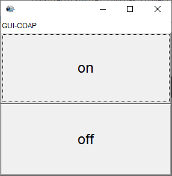

LabRaspiIntro | Using the RaspberryPi
Overview
- Setup Buster Lite
- Download Raspbian Buster Lite
- Start Configuration
- About Buster Lite
- About Python
- Test the camera
- Install Java
- Install GIT
- Enable I2C
- Install mjpg-streamer
- Install aiocoap
- Install Node.js
- Install Samba
- The hardware
- Connect the hardware
- Led - Qak
- Deploy QAk models on RaspberryPi
- Docker on RaspberryPi
The voltage drop may be caused by the USB cable used: length, cable thickness, connector quality Info sul sistemaSee also: RaspberryPi: Tutti i comandi utili a colpo d’occhio |
If the connection does not work ... see Network does not come up when restarting ... sudo route add default gw 192.168.1.1 wlan0 /etc/network/interfaces (to set a static IP)auto eth0 allow-hotplug eth0 iface eth0 inet dhcp iface eth0 inet static address 192.168.1.23 netwmask 255.255.255.0 gateway 192.168.1.1 auto wlan0 allow-hotplug wlan0 iface wlan0 inet dhcp wpa-conf /etc/wpa_supplicant/wpa_supplicant.conf dns-nameservers 8.8.8.8 dns-search domain-name /usr/local/bin/checkwifi.sh (to restart wlan0)ping -c4 192.168.1.1 > /dev/null if [ $? != 0 ] then echo "No network connection, restarting wlan0" /sbin/ifdown 'wlan0' sleep 5 /sbin/ifup --force 'wlan0' fi ------------------------------------------------------------------------------ crontab -e */5 * * * * /usr/bin/sudo -H /usr/local/bin/checkwifi.sh >> /dev/null 2>&1 ------------------------------------------------------------------------------ sudo chmod 775 /usr/local/bin/checkwifi.sh |
No wifi? |
sudo ip link set wlan0 up |
About Buster Lite
|
Start Configurationsudo apt-get update -y sudo apt-get upgrade -y sudo raspi-config (interfacing options) sudo apt install fswebcam sudo apt-get install cmake |
About PythonOn the RaspberriPi B+ pre-Buster Lite, there are pre-installed Python 2.7.13 and Python 3.5.3.On Buster Lite, there is |
sudo apt-get install python3-pip View processes and killps -fA | grep python sudo kill -s KILL <process number> |
Test the camera |
raspistill -o image.jpg raspivid -o video.h264 -t 5000 |
Install wiringpi
|
sudo apt-get install wiringpi
|
Install Java |
sudo apt install openjdk-8-jdk openjdk-8-jre update-alternatives --config java java -version |
Notes on Pi4JUsing Pi4J : useful linksJava8+Pi4j (pdf) Pi4j site |
For the This library has been built from the 2-12 SNAPSHOT and is not available in MavenCentral. |
Install GIT |
sudo apt-get install git git --version |
Enable I2C |
sudo nano /boot/config.txt |
Install mjpg-streamer |
sudo apt-get install cmake libjpeg8-dev Au Raspian Buster lite: sudo apt-get install build-essential libjpeg8-dev imagemagick libv4l-dev cmake -y git clone https://github.com/jacksonliam/mjpg-streamer.git cd /home/pi/nat/mjpg-streamer/mjpg-streamer-experimental make all sudo make install ls /dev/video* |
Install aiocoapInstall Copper in Chrome in Windows10See Copper for Chrome (Cu4Cr) CoAP user-agent |
https://aiocoap.readthedocs.io/en/latest/ wget https://aiocoap.readthedocs.io/en/latest/aiocoap-0.3.tar.gz tar xvzf aiocoap-0.3.tar.gz cd aiocoap-0.3 sudo ./setup.py install |
Install Node.js |
sudo apt remove nodejs nodejs-legacy -y sudo apt remove npm -y sudo apt remove --purge node |
Install Samba |
sudo apt install -y samba |
Install a Wifi HotSpotHotspotWifiRaspberryPI3 https://www.domsoria.com/2020/02/cose-e-come-funziona-webrtc/https://www.domsoria.com/2019/10/configurare-la-raspberry-pi-come-access-point/ |
sudo cp /etc/wpa_supplicant/wpa_supplicant.conf /etc/wpa_supplicant/wpa_supplicant.conf.sav sudo cat /etc/wpa_supplicant/wpa_supplicant.conf sudo cp /dev/null /etc/wpa_supplicant/wpa_supplicant.conf sudo nano /etc/wpa_supplicant/wpa_supplicant.conf edit in the file /etc/wpa_supplicant/wpa_supplicant.conf and add the following lines: ctrl_interface=DIR=/var/run/wpa_supplicant GROUP=netdev update_config=1 RASPAP https://raspap.com/#quick-installer 10.3.141.1 wget -q https://git.io/voEUQ -O /tmp/raspap && bash /tmp/raspap curl -sL https://install.raspap.com | bash Per un certo periodo di tempo non sappiamo perché, ma sembra che l'accesso a Internet non sia più funzionale di default dopo l'installazione. Per risolvere questo problema è sufficiente fare le due cose seguenti. abilitare il trasferimento dei pacchetti IPv4. Per fare questo, modificare il file /etc/sysctl.confand uncomment (cioè rimuoverlo all'inizio) la seguente riga: #net.ipv4.ip_forward=1 Fatto questo, modificheremo iptables per definire l'IP di uscita che verrà indicato in modo che i server sappiano a chi rispondere (beh, da quello che ho capito, se ho sbagliato le correzioni sono le benvenute). Per fare questo, aprite il file /etc/rc.local e aggiungete la seguente riga prima della parte "exit 0": iptables -t nat -A POSTROUTING -j MASQUERADE Riavviare la Raspberry PIe tutto dovrebbe funzionare come dovrebbe! |
The hardware

under voltage detectedYou need one that supplies 5v at about 2Amps or more (2.5 for a Pi3b+)ResistorsThe Raspberry Pi has internal pull-up and pull-down resistors that can be specified when the pin declarations are made.If we need some resistor: resistor color code |
gpio readall +-----+-----+---------+------+---+-Model B2-+---+------+---------+-----+-----+ | BCM | wPi | Name | Mode | V | Physical | V | Mode | Name | wPi | BCM | +-----+-----+---------+------+---+----++----+---+------+---------+-----+-----+ | | | 3.3v | | | 1 || 2 | | | 5v | | | | 2 | 8 | SDA.1 | ALT0 | 1 | 3 || 4 | | | 5V | | | | 3 | 9 | SCL.1 | ALT0 | 1 | 5 || 6 | | | 0v | | | | 4 | 7 | GPIO. 7 | IN | 1 | 7 || 8 | 1 | ALT0 | TxD | 15 | 14 | | | | 0v | | | 9 || 10 | 0 | OUT | RxD | 16 | 15 | | 17 | 0 | GPIO. 0 | IN | 0 | 11 || 12 | 0 | OUT | GPIO. 1 | 1 | 18 | | 27 | 2 | GPIO. 2 | IN | 0 | 13 || 14 | | | 0v | | | | 22 | 3 | GPIO. 3 | IN | 0 | 15 || 16 | 0 | IN | GPIO. 4 | 4 | 23 | | | | 3.3v | | | 17 || 18 | 0 | IN | GPIO. 5 | 5 | 24 | | 10 | 12 | MOSI | ALT0 | 0 | 19 || 20 | | | 0v | | | | 9 | 13 | MISO | ALT0 | 0 | 21 || 22 | 0 | IN | GPIO. 6 | 6 | 25 | | 11 | 14 | SCLK | ALT0 | 0 | 23 || 24 | 1 | ALT0 | CE0 | 10 | 8 | | | | 0v | | | 25 || 26 | 1 | ALT0 | CE1 | 11 | 7 | +-----+-----+---------+------+---+----++----+---+------+---------+-----+-----+ | 28 | 17 | GPIO.17 | IN | 0 | 51 || 52 | 0 | IN | GPIO.18 | 18 | 29 | | 30 | 19 | GPIO.19 | IN | 0 | 53 || 54 | 0 | IN | GPIO.20 | 20 | 31 | +-----+-----+---------+------+---+----++----+---+------+---------+-----+-----+ | BCM | wPi | Name | Mode | V | Physical | V | Mode | Name | wPi | BCM | +-----+-----+---------+------+---+-Model B2-+---+------+---------+-----+-----+ |
Model B+Model B+ uses the same numbering as the Model B2.0, and adds some new pins.
|
gpio readall +-----+-----+---------+------+---+---Pi B+--+---+------+---------+-----+-----+ | BCM | wPi | Name | Mode | V | Physical | V | Mode | Name | wPi | BCM | +-----+-----+---------+------+---+----++----+---+------+---------+-----+-----+ | | | 3.3v | | | 1 || 2 | | | 5v | | | | 2 | 8 | SDA.1 | ALT0 | 1 | 3 || 4 | | | 5v | | | | 3 | 9 | SCL.1 | ALT0 | 1 | 5 || 6 | | | 0v | | | | 4 | 7 | GPIO. 7 | IN | 1 | 7 || 8 | 1 | ALT0 | TxD | 15 | 14 | | | | 0v | | | 9 || 10 | 1 | ALT0 | RxD | 16 | 15 | | 17 | 0 | GPIO. 0 | IN | 0 | 11 || 12 | 0 | IN | GPIO. 1 | 1 | 18 | | 27 | 2 | GPIO. 2 | IN | 0 | 13 || 14 | | | 0v | | | | 22 | 3 | GPIO. 3 | IN | 0 | 15 || 16 | 0 | IN | GPIO. 4 | 4 | 23 | | | | 3.3v | | | 17 || 18 | 0 | IN | GPIO. 5 | 5 | 24 | | 10 | 12 | MOSI | IN | 0 | 19 || 20 | | | 0v | | | | 9 | 13 | MISO | IN | 0 | 21 || 22 | 0 | OUT | GPIO. 6 | 6 | 25 | | 11 | 14 | SCLK | IN | 0 | 23 || 24 | 1 | IN | CE0 | 10 | 8 | | | | 0v | | | 25 || 26 | 1 | IN | CE1 | 11 | 7 | | 0 | 30 | SDA.0 | IN | 1 | 27 || 28 | 1 | IN | SCL.0 | 31 | 1 | | 5 | 21 | GPIO.21 | IN | 1 | 29 || 30 | | | 0v | | | | 6 | 22 | GPIO.22 | IN | 1 | 31 || 32 | 0 | IN | GPIO.26 | 26 | 12 | | 13 | 23 | GPIO.23 | IN | 0 | 33 || 34 | | | 0v | | | | 19 | 24 | GPIO.24 | IN | 0 | 35 || 36 | 0 | IN | GPIO.27 | 27 | 16 | | 26 | 25 | GPIO.25 | IN | 0 | 37 || 38 | 0 | IN | GPIO.28 | 28 | 20 | | | | 0v | | | 39 || 40 | 0 | IN | GPIO.29 | 29 | 21 | +-----+-----+---------+------+---+----++----+---+------+---------+-----+-----+ | BCM | wPi | Name | Mode | V | Physical | V | Mode | Name | wPi | BCM | +-----+-----+---------+------+---+---Pi B+--+---+------+---------+-----+-----+ |
Basic Experiments (interactive)
| Bash | Gpio | Python |
|---|---|---|
echo Unexporting.
echo 25 > /sys/class/gpio/unexport #
echo 25 > /sys/class/gpio/export #
cd /sys/class/gpio/gpio25 #
echo Setting direction to out.
echo out > direction #
echo Setting pin high.
echo 1 > value #
sleep 1 #
echo Setting pin low
echo 0 > value #
sleep 1 #
echo Setting pin high.
echo 1 > value #
sleep 1 #
echo Setting pin low
echo 0 > value #
led25OnOff.sh
|
gpio readall #
echo Setting direction to out
gpio mode 6 out #
echo Write 1
gpio write 6 1 #
sleep 1 #
echo Write 0
gpio write 6 0 #
led25Gpio.sh
|
The newest version of Raspbian has the RPi.GPIO library pre-installed. sudo python >>> import RPi.GPIO as GPIO >>> GPIO.VERSION >>> GPIO.setmode(GPIO.BCM) >>> GPIO.setup(25,GPIO.OUT) >>> while True: >>> GPIO.output(25,GPIO.HIGH) >>> time.sleep(1) >>> GPIO.output(25,GPIO.LOW) >>> time.sleep(1) >>> quit()ledPython25.py |
Connect the hardware
| ButtonLed | Motors |
 |
 |
ButtonLed Code - Low Level
| Bash | Gpio | Python |
|---|---|---|
|
led25OnOff.sh buttonOn24Click.sh buttonLed.sh |
led25Gpio.sh button24Gpio.sh |
ledPython25.py buttonPython24.py buttonLedPython.py |
Sonar HC-SR04 UltraSonic Distance Measure Module Range Sensor
| Low-level | Sonar support for QAk components | Qak components |
|---|---|---|
|
SonarAlone.c Writes data on the standard output. g++ SonarAlone.c -l wiringPi -o SonarAlone ./SonarAlone |
sonarHCSR04Support.kt Uses a given ActorBasic (owner) to emit the event |
sonar.qaksonar.qakSimply activates sonarHCSR04Support.kt. Works by using a MQTT broker. sonarobserver.qaksonarobserver.qakPerceives the events Python observer (via MQTT)mqttPlotQakEvents.pySee also the IPython Notebook file mqttPlotQakEvents.ipynb Perceives the events |
Devices for home-made DDR

|
Home-made DDRDevices for a ddr robotSensorsMotorsnanoMotorDriveA.shnanoMotorDriveA.sh Motors.c |
Led - Qak
Let us introduce a here a qak-model for a Led mounted on a RaspberryPi (the anode on GPIO25, cathod on a GND).| Led: Model (on RaspberryPi) | Command the Led (from the PC) | Led ledobservers (on the PC) |
|---|---|---|
|
ledalone.qak This is component that:
|
Using Kotlin
Using Python
Using a GUI
|
Using KotlinactorQakCoapObserver.kt: works with CoAPA Qak component that perceives the
ledobserver.qak
|
Deploy QAk models on RaspberryPi
With reference to the project it.unibo.qak20.raspIntro2020:- update the generated file
build_ctxledalone.gradle by specifying the class of the main programplugins { id 'java' id 'eclipse' id 'org.jetbrains.kotlin.jvm' version '1.3.71'id 'application' } ...mainClassName = it.unibo.ctxledalone.MainCtxledaloneKt ' jar { println("executing jar") from sourceSets.main.allSource manifest { attributes 'Main-Class': "$mainClassName" } }The generated file build_ctxledalone.gradle must be properly edit by the Application designer.
Note that the main class name must be terminated with aKt , since Kotlin code is translated in Java. - execute the command
gradle
or-b build_ctxledalone.gradle distZip gradle
-b build_ctxledalone.gradle distTar Generates the distribution file is the directory build/distributions - Now:
- copy the distribution file on the RaspberryPi
- unzip the distribution file
- work in the directory
it.unibo.raspIntro2020-1.0/bin copy in this directory the files- The description of the system: ledalone.pl
- The rules used by the QAk run-time: sysRules.pl
- Californium.properties
- ... other Application-defined required resources ...
Run the system
Executebash it.unibo.raspIntro2020-1.0
Docker on RaspberryPi
Raspberry Pis use the ARM architecture, and as a result, won't be compatible with all containers out of the box. Images will need to be built from anSee Happy Pi Day with Docker and Raspberry Pi.
| Install |
curl -sSL https://get.docker.com | sh |
| Add permission to run Docker Commands |
sudo usermod -aG docker pi |
| Test Docker installation | docker run hello-world |
| Install proper dependencies | sudo apt-get install -y libffi-dev libssl-dev sudo apt-get install -y python3 python3-pip sudo apt-get remove python-configparser |
| Install |
sudo pip3 install docker-compose |
| Check and purge |
journalctl -u docker.service sudo apt-get update sudo apt-get full-upgrade |
Deploy (example blses1_onoff.qak in project it.unibo.rasp2021)
Set the main class in
build2021.gradle mainClassName = 'it.unibo.ctxblses1.MainCtxblses1Kt' jar { println("executing jar") from sourceSets.main.allSource manifest { attributes 'Main-Class': "$mainClassName" } }Create the distribution
gradlew distTar
Define the
Dockerfile FROM
hypriot/rpi-java ##uses jessie EXPOSE 8075 ## ADD extracts the tar ADD *.tar / WORKDIR /it.unibo.rasp2021-1.0/bin COPY ./*.pl ./ COPY ./*.sh ./ COPY ./*.py ./Does not work --------------- ## RUN apt-get update -y ## RUN apt-get install -y wiringpi ## RUN sudo apt-get install -y python ---------------------------------- Build, modify and run the image
docker build -t qakled2021 . docker run -it --rm --name led2021 -p8075:8075/tcp -p8075:8075/udp
--privileged qakled2021/bin/bash //use the console sudo apt-get update -y sudo apt-get install wiringpi sudo docker commit 0b53c2e4320b qakled2021gpio bash it.unibo.rasp2021//run the image (augmented with wiringpi) docker run -it --rm --name led2021 -p8075:8075/tcp -p8075:8075/udp--privileged qakled2021gpio/bin/bash orbash it.unibo.rasp2021 bash led25Gpio.sh//to test that gpio is working Tag the image and register on DockerHub
Login in DockerHub (get the password from a private file) type docker_password.txt | docker login --username natbodocker --password-stdinTag the image docker tag qakled2021gpio natbodocker/qakled2021gpioRegister the image docker push natbodocker/qakled2021gpioUse qakled2021pio.yaml
docker-compose -f qakled2021pio.yaml up